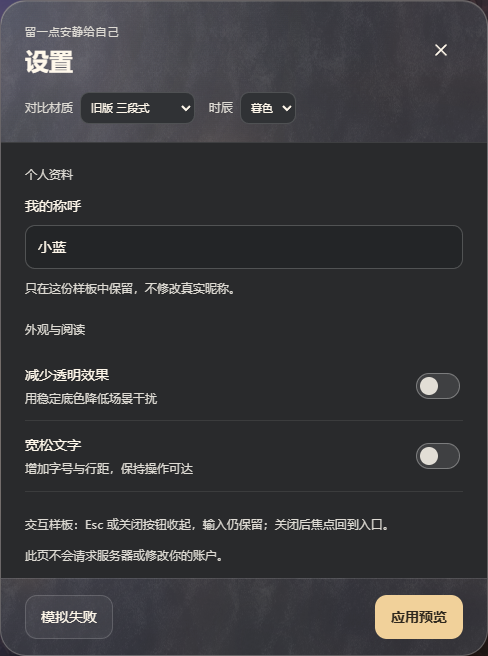

CINNAGLASS / M1 材质提案 · 待确认
保留阅读底，让玻璃外壳连成一体
同一场景、同一内容。左边是原三段式，右边是连续玻璃边包住圆角阅读内衬。
正常居中位置的真实截图，没有人为增强材质。
调整前 · 三段式
正文横向接满窗口，标题与页脚被切成两段。

调整后 · 连续玻璃壳
左右留出玻璃边，圆角内衬仍提供稳定阅读底。
原版：稳定正文与外壳之间存在贯穿全宽的硬分界。
新版：保留阅读稳定性，用连续边框与圆角减轻分段感。
同一场景、同一内容。左边是原三段式，右边是连续玻璃边包住圆角阅读内衬。
正常居中位置的真实截图，没有人为增强材质。
正文横向接满窗口，标题与页脚被切成两段。

左右留出玻璃边，圆角内衬仍提供稳定阅读底。
原版：稳定正文与外壳之间存在贯穿全宽的硬分界。
新版：保留阅读稳定性，用连续边框与圆角减轻分段感。